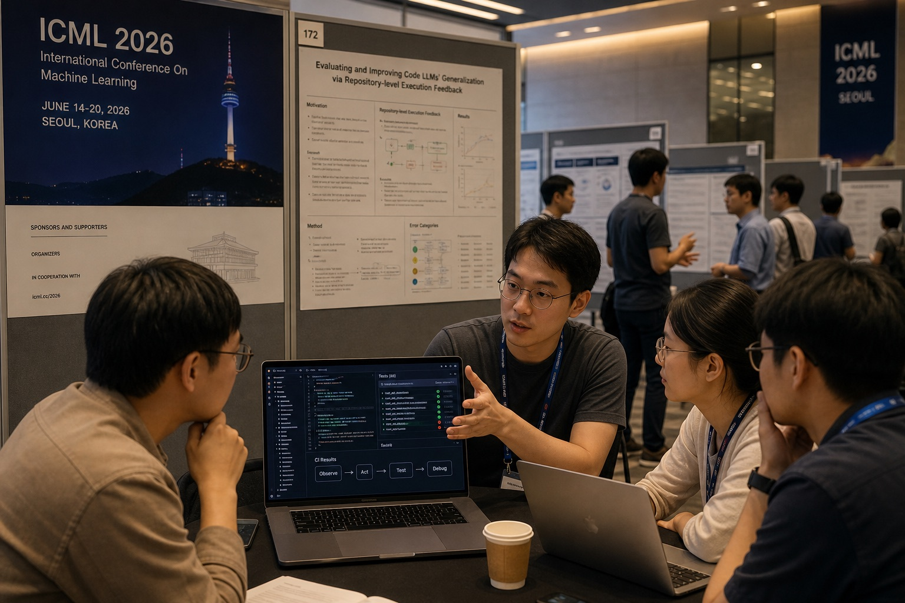

An ICML Field Note on Code Agents
Why did Code Agent become the center of this round of Agent discussion? The deeper question is how the Agent era defines trainable tasks.

Consensus The consensus around Code Agent feels unusually concentrated and concrete: among specialized-task agents, it has both a high commercial ceiling and a high chance of being trainable.
Map Agent tasks are moving into a one-vertical, many-horizontal pattern. Vertically, the question is whether a task can raise the intelligence ceiling of models. Horizontally, the question is whether it has real economic value, business value, and a business loop. Code Agent currently touches both.
Vertical A vertical task worth training on, and worth using to lift the model's Agent capability, needs at least two properties: it must be long-horizon, and it must be easy to verify.
Horizontal A horizontal task usually needs real demand, clear economic value, and an accessible tool or workflow surface. Ideally, it can also be shaped into a Code-like environment where the Agent can act, observe, verify, and replay.
Path The next step is to watch two lines at once: vertically, keep looking for new scalable training fields; horizontally, reshape more high-value tasks into Code-like environments.
Reading route
- 01 Code Agents at ICML: unusually concentrated consensus
- 02 The vertical and horizontal map of Agent tasks
- 03 Code can go vertical and expand horizontal
- 04 New horizontal tasks are growing out of Code
- 05 Field sensing (I): more tasks joining the Code Agent horizontal system
- 06 Field sensing (II): today's horizontal tasks may become tomorrow's vertical tasks
- 07 Competitive strategy: stand 15 degrees away from consensus
Code Agents at ICML: unusually concentrated consensus
Seoul in July was hot. The air had a damp coastal smell, mixed with conference-room air conditioning and coffee. Inside the ICML hall, people moved from the poster area into the corridors, then back to small tables that looked temporarily assembled for one more conversation. Some people were explaining evals over laptops. Some were drawing RL pipelines on whiteboards. Some were standing near the escalators, trying an unfinished thought on someone they had just met.
Inside that noise, one signal became clearer: the conversation kept returning to Code. Developer-tool teams were talking about Code Agents. Model companies were talking about Code RL. Conversations about model capability, evaluation, infra, quant and finance workflows, and research automation all tended to land on the same question: if we want to train a specialized Agent that can actually do work, is Code the most certain entry point right now?
This degree of certainty feels rare. Over the past two years, many Agent narratives were large: universal assistants, AI employees, automated companies. In real conversations, people cared about a more basic question: can it create value reliably inside one task domain first? Code Agent feels grounded here. Software engineering is already high-value work. Quant, finance, enterprise infra, and internal toolchains are full of code and glue workflows. If a specialized Code Agent works reliably, it becomes productivity directly.
One conversation with someone from a quant firm stayed with me. He said his boss was entering the space very directly because the current stage has an unusually clear path from spending to profit coverage: how much to invest, how quickly the cost can be covered, and whether the output can turn into profit. Many Agent stories still sit at the level of vision. Code is closer to production systems, research workflows, and trading infra. Once part of the engineering, research, debugging, and maintenance chain can be automated reliably, the math becomes visible, and money and teams move faster.
What I heard at ICML was a kind of convergence. Many previously scattered routes are beginning to recognize Code Agent as a sufficiently concrete task template. It has commercial value and training value. It does real work and leaves trajectories. It serves a clear task domain and also pressures models to develop long-horizon execution capability.
New tasks are also growing along the capability surface of Code Agent. Cybersecurity, EDA and circuit design, science and research tasks, biopharma, and Auto Research are all trying to organize their work into executable, verifiable, replayable forms. For now they look like horizontal applications. If the tasks become long enough and the feedback becomes clear enough, some of them may grow into new vertical training fields. The important part of Code's heat is that it gives people a more concrete picture of what an Agent task should look like.
The vertical and horizontal map of Agent tasks
I now find it more useful to view Agent tasks through a one-vertical, many-horizontal frame. The vertical axis is the model intelligence ceiling: can this task continuously train long-horizon execution, tool use, state tracking, error recovery, and verification awareness? The horizontal axis is economic value and task depth: does this domain have real demand, real budgets, real workflows, and a path to sustained productivity?
Code is special because it stands on both axes. Horizontally, software engineering, quant, finance, and enterprise infra all contain real high-value tasks. Vertically, Code is also verifiable, long-horizon, feedback-rich, and scalable as a training environment. Its application value and training value are both strong.
Layer 1: the tasks are real, and there are many of them
A training field without real economic value will struggle to produce enough complex, realistic tasks over time. Software engineering is the opposite. Companies deal with issues, migrations, tests, refactors, debugging, integrations, deployment, code review, and system maintenance every day. These tasks already exist in production, with natural demand and cost.
This matters. Agent training needs a task distribution; a handful of nice examples is not enough. Code's advantage is that the distribution already exists, and the tasks carry cost, context, and historical constraints. Quant, finance, enterprise software, data platforms, and internal infra also contain large volumes of business code and glue code. Code therefore connects directly to how organizations operate, not just to open-source repo puzzles.
Layer 2: the feedback is dense and cheap
After an Agent takes an action, it needs reliable feedback. Many real-world tasks have slow, expensive, vague feedback. A strategy report may take months to prove useful. A sales action depends on customer response. Even GUI automation often receives only a sparse success or failure signal.
Code has unusually dense feedback. Lint, type checks, compile errors, unit tests, runtime errors, CI, diff review, and benchmark regressions all tell the Agent where it went wrong, how specific the failure is, and where the next repair might go. Most of this feedback already exists in engineering systems. We do not need to invent an evaluation mechanism from scratch.
Training can consume this feedback directly. It can become reward, trajectory data, repair data, or a diagnostic lens for whether the model is stuck at localization, modification, verification, or recovery. For an Agent, dense feedback makes it easier to turn one failure into the next action instead of receiving a single vague wrong answer.
Layer 3: real tasks are naturally long-horizon
Many Agent capabilities do not naturally appear in single-turn chat. Context selection, plan adjustment, tool calling, error recovery, state tracking, and verification awareness only become visible in long-chain tasks. Real software engineering has exactly this shape: read the issue, understand the repo, locate the files, modify across files, run tests, follow the error back, and check whether other paths broke.
Traditional code completion cares about the next token or the next function. Code Agent cares about a changing work state. It needs to know what it changed, why it changed it, what to verify next, and how to roll back or try another direction after failure. This is closer to an executor than a question-answering model.
The meaning of Code Agent is that it gives the model a complex, verifiable environment where it can fail, recover, and revise repeatedly. The more realistic that environment becomes, the more pressure it places on the long-horizon execution capabilities Agents need.
Layer 4: Code is the most general Agent and environment template
Code is general because many Agent actions can already be code-shaped. This does not mean every task must end as Python. MCP / Tool Use is one example: once external systems are wrapped as typed tools, the Agent can call calendars, databases, browsers, internal systems, and business APIs in a way that resembles writing code. GUI is similar. Clicks, typing, dragging, and reading page state look like interface operations, but once they become action schemas, UI state, and replay traces, they can enter a Code-style loop.
Vision tasks show the same tendency. Many vision problems can be organized through detection, cropping, OCR, coordinate localization, tool calling, and verification. Kimi's zero-vision style is one example of this broader direction: break a vision problem into executable steps and let the model use code and tools to process visual information, instead of compressing visual understanding into one end-to-end answer.
At a deeper level, the digital world's environments are built with code. Websites, apps, databases, document systems, trading systems, experiment platforms, and enterprise workflows are all states, interfaces, and rules defined by software. When an Agent enters these environments, the natural middle layer is often still Code: use code to call tools, read state, change the world, and verify the result through code or rules.
Code Agent therefore leaves behind an Agent task template and an environment template. A task enters an operable digital environment. The Agent changes state through actions. A verifier judges the result. The trajectory is kept for future training. Any task domain that can organize itself into this template will be easier to connect to the next stage of Agent capability.
There is an analogy to the LM era. LLMs unified many tasks because writing, translation, summarization, Q&A, and reasoning could be compressed into token prediction and chat interaction. The Agent era also needs a shared outer form. The most mature one today is the executable work loop that Code provides: task, environment, action, verification, and trajectory inside one cycle.
Code can go vertical and expand horizontal
The most interesting thing about Code is that it stands in both directions. Vertically, it is an environment for training Agent capabilities. Horizontally, it is a real, expensive, frequent production task domain. That is why people in different ICML conversations kept returning to Code: it explains both training and business.
Start with the vertical side. A good vertical training field needs to be long-horizon and easy to verify. Code is strong on both. Real tasks require reading the repo, understanding context, modifying across files, running tests, debugging, rolling back, and checking whether other paths broke. Every step tests planning, state tracking, tool use, and error recovery. A model will not reliably grow these capabilities through single-turn chat. In an engineering environment, it has to act and revise itself through feedback.
This is why Code is attractive for training. It gives the model a changing work site. Which files did the Agent change today, why did it change them, why did the tests fail, should the next step be dependency repair, logic repair, or rollback? All of this becomes trajectory. For training, this is more valuable than a final score because the intermediate process shows where the model is stuck.
The horizontal side is just as important. Code is a thick commercial task domain. Software engineering, quant, finance, enterprise infra, data platforms, and research toolchains all involve reading code, changing code, debugging systems, connecting tools, and maintaining workflows. These jobs already happen inside organizations, and organizations already pay to solve them. If a Code Agent can reliably absorb part of this work, the value is direct.
So Code occupies a rare position. It can move upward into a vertical scene for training Agent capability, and outward into a horizontal scene for covering real workflows. Many directions can answer only one side: commercial value may be clear but the training signal is weak, or evaluation may be clear but the task is far from production. Code currently answers both sides, which is why it became the most concentrated consensus in this round of Agent discussion.
New horizontal tasks are growing out of Code
The horizontal change is also visible. Many tasks are learning Code's way of organizing work. They are taking loose business processes and reshaping them into something more like engineering tasks: an environment, tools, intermediate state, result checks, and repair paths after failure. This shift matters more than placing a chatbot on top of an industry.
The spillover I saw most clearly falls into several groups. First is Auto Research: people are trying to break research into executable, traceable, verifiable Agent workflows. Second is Cyber: security already has scanning, exploitation, repair, verification, and reproduction, making it naturally close to the Code Agent loop. Third is EDA and circuit design: RTL, simulation, synthesis, constraints, timing, and verification already live inside a strong toolchain. Fourth is Bioscience, especially biopharma, with experiments, data, scripts, metrics, and reproduction chains. Fifth is broader Science, where many research workflows are being reorganized into executable, traceable task environments.
- Auto ResearchThe interesting part is turning topic selection, search, experiment scripts, data analysis, figures, reports, and reproduction into a workflow. It is closer to research-process automation; one-shot Q&A only covers a small part.
- CyberSecurity tasks naturally have toolchains, sandboxes, scanning, exploitation, repair, and verification. The chain is long, and the feedback is clearer, so it maps well to the Code Agent work loop.
- EDA / circuit designCircuit design has RTL, netlists, simulation, synthesis, constraints, timing closure, and formal verification. If an Agent can enter this toolchain, the feedback is harder than many open-ended tasks.
- Bioscience / biopharmaBiopharma involves experiment design, data processing, scripts, metrics, reproduction, and compliance constraints. Once these processes are organized into environments, they become close to new Agent task fields.
- Other ScienceBroader scientific research is moving in the same direction: literature, data, experiment logs, simulations, analysis scripts, and reports can be chained into longer execution paths.
These directions currently look like horizontal spillover. They first absorb real demand and solve efficiency problems in specific scenes. The real question is whether they can produce stable task distributions. If a field has high-value tasks happening every day, and the task process can be recorded, verified, and replayed, it will begin to move closer to Code rather than remain a demo scene.
That is what I mean by growing out of Code. New task domains are being reorganized by Code's format. They do not all need to become software development. The key is whether the domain can become an environment where Agents can work for a long time.
Field sensing (I): more tasks joining the Code Agent horizontal system
Over the next few months, the horizontal side will heat up first. More tasks will join the Code Agent horizontal system: Auto Research, Cyber, EDA and circuit design, data analysis, scientific experiments, biopharma, GUI and browser tasks. They may not become new training fields at the beginning. They will first learn Code Agent's task organization method: split work into executable steps, expose environment state, and connect feedback and verification into the workflow.
This kind of joining requires taking real workflows apart and placing them inside an environment where an Agent can continue working. The task entry needs to be clear. Tool calls need to be stable. Intermediate state needs to be visible. The final result needs to be checkable. Only then does the Agent move from one-time answering into repeated action inside a task field.
This line is about whether real task domains can be reshaped into Code-like environments. GUI needs state representation and replay. Cyber needs safety boundaries and reproducible environments. EDA needs toolchain access, simulation feedback, constraint generation, and timing closure. Bio and Science need experiment workflows and metric verification. Data analysis needs a loop across data, scripts, charts, and conclusions. These sound like engineering problems, but they are the gate that determines whether a horizontal task can enter the Agent system.
The thicker a horizontal task becomes, the more it provides real demand, real budgets, and real workflows. It also becomes more likely to feed model capability growth. In the short run, these tasks will enter as tools, MCP surfaces, workflows, and harnesses. In the long run, a small number of them may accumulate stable environments and stable feedback, then continue moving toward the vertical side.
This is also why MCP and Tool Use matter. They are more like horizontal-access infrastructure: wrap external systems as typed tools so non-code tasks can enter a Code Agent style loop. Valuable horizontal expansion lets Agents work in more real environments, instead of merely knowing more industry nouns.
Field sensing (II): today's horizontal tasks may become tomorrow's vertical tasks
The second line is more important: can today's horizontal tasks grow into new vertical tasks? Code Agent has already demonstrated one version of this. A high-value application task can become a main field for training model Agent capability. The next crossing point may come from Auto Research, Cyber, EDA and circuit design, biopharma, scientific research, or another task domain.
The key question is which direction can move from application into training environment. Horizontal tasks first solve business problems. Vertical tasks then lift the model capability ceiling. For a task domain to make that upgrade, it needs to continuously produce high-quality trajectories, provide automatic feedback, support repeated training, and scale with data and environment expansion.
The filter is hard. The task must be verifiable, the chain must be long enough, and failure must be attributable. Verifiable means the result can be judged through tests, replay, metrics, rules, or external environment state. Long enough means the task spans multiple steps and exposes planning and error recovery. Attributable failure makes it possible to turn one failure into training material for the next round.
This upgrade usually will not happen in one step. A horizontal task first appears as a product or tool that solves efficiency in one concrete scene. Then it gradually grows harnesses, task generation, environment replay, verifiers, and data logging. Only after that can it become a training field. The real dividing line is whether it moves from helping a person do one task to continuously producing a trainable task distribution.
These are the same categories as the earlier horizontal observations, seen through a different question: who is most likely to move from horizontal application to vertical training field? Auto Research has long chains and many steps, but must harden task definition and result verification. Cyber has relatively clear verifiers and mature tools, while reproducible environments and compliance boundaries are hard. EDA and circuit design have hard feedback, strong toolchains, and high task value, but also high barriers in tools and data. Bioscience and biopharma have thick value, with slow experimental feedback, noisy signals, and high standardization cost. Other Science needs to compress research workflows into harder task definitions first.
So I would look past the LLM demo and check for environment engineering: standardized task entry, stable reproduction of the same scene, the ability to locate whether failure came from planning, tools, data, or verification, and trajectories that can be kept for training. Without this, a hot horizontal task stays at the application layer. With this, it can become fuel for vertical capability.
Over the next few months, I will pay more attention to these signals: stable environments, stable verifiers, and stable trajectories appearing inside a horizontal task. When all three appear together, the task may move beyond application opportunity and grow into a new vertical training field.
Competitive strategy: stand 15 degrees away from consensus
This judgment eventually becomes practical: if Code Agent is already consensus, where is the new position? I think the better position is 15 degrees away from consensus. Stay close enough to Code to inherit its task template, toolchain, and training signal. Stay far enough from the most crowded center to build differentiation in a new task domain.
Code Agent has shown that a real task domain can have both commercial value and training value. Software engineering is the first mature example because it has real budgets, strong toolchains, hard feedback, verifiable results, and long-chain trajectories. Once this pattern is visible, competitive strategy splits into two lines: one vertical line that searches for the next training task capable of lifting the Agent capability ceiling, and one horizontal line that connects more real tasks into Code as a general Agent / environment template.
The vertical strategy is to press on the next task that can scale up Agent intelligence. This task must be long enough to expose planning, tool calling, state tracking, and error recovery. It also needs a stable environment, hard verifiers, and replayable trajectories. Without those, it is hard to become a training field. SWE is the clearest current template. The next candidates may be Cyber, EDA and circuit design, Auto Research, or other science tasks.
Directions that can continuously produce high-quality training signals are worth watching more closely. If Cyber solves compliance and reproduction, it has a long chain of sandboxing, scanning, exploitation, repair, and verification. If EDA connects into toolchains, it has hard feedback from RTL, simulation, synthesis, constraints, and timing closure. If Auto Research standardizes research processes, it can turn search, experiments, data, figures, and reports into replayable trajectories. The valuable part in these directions is the environment, task construction, and verifier.
The horizontal strategy is to connect more real tasks into Code as a general Agent / environment template. Each industry needs to reshape tasks into executable, stateful work loops with tools, feedback, and verification. A chatbot layer only solves the surface. The real opportunities in MCP, GUI, data analysis, research workflows, enterprise systems, and biopharma sit in this transformation.
The most important horizontal variable is task depth. Are real users doing this every day? Is there budget? Are there existing digital environments and tool interfaces? Can the result be verified? Industry knowledge Q&A can easily stay at the demo layer. Industry workflows that become Code-like tasks can let Agents enter production.
For an individual or a team, the center of consensus is not always the best place to stand. The more valuable question is whether your task domain has unique data, toolchains, customer workflows, or verifiers. Can it stay close enough to the Code trunk and be organized into an executable, observable, verifiable, replayable environment? If yes, that 15-degree angle may be a better bet than the crowded center.